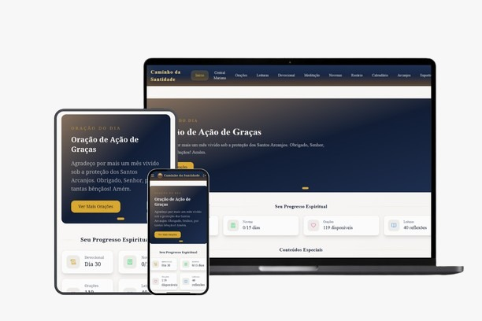

E mesmo assim, na semana seguinte você está no mesmo lugar. Com a mesma culpa. Os mesmos pecados. A mesma oração que parece bater no teto. Isso não é falta de fé, é falta de um método. E isso tem solução. 🙏
Responda 7 perguntas honestas e descubra exatamente o que está te impedindo de avançar, e o primeiro passo concreto para sair do lugar hoje.
📋 7 perguntas. 2 minutos. Sem julgamento. No final, você recebe o diagnóstico do seu estado espiritual e o caminho exato para começar a transformação hoje, não amanhã.
🕊️
Antes de começar, posso incluir seu nome em nossas orações diárias?
Ao entrar aqui, você não está sozinho. Há uma comunidade de almas que caminham juntas
, e seu nome será levado ao altar nas nossas preces de hoje. Como posso te chamar? 🙏✝️
, que alegria ter você aqui. 🙏
Seu nome foi registrado no nosso Livro de Orações. A partir de hoje, você não caminha mais sozinho nessa jornada.
Agora, para que eu possa traçar o seu caminho com precisão, me responda com honestidade:
Onde você mais sente que sua vida espiritual está estagnada?
🔁Continuo caindo nos mesmos pecados e hábitos, por mais que tente
🥶Minha oração está fria e sem vida, rezo por obrigação, não por amor
😔Sinto que Deus está distante e que não sou digno de ser amado por Ele
🌪️Minha fé é instável, em um dia acredito, no outro duvido de tudo
🧭Quero crescer, mas não sei por onde começar de verdade
Seja honesto: como está o seu coração espiritual agora?
😞Cansado. Já tentei mudar tantas vezes e sempre volto ao mesmo lugar.
😶Vazio. Faço as práticas religiosas, mas não sinto Deus de verdade.
😟Inquieto. Sei que deveria ser mais, mas não sei como chegar lá.
🕊️Em paz, mas com sede. Quero aprofundar o que já tenho.
🔥Ardente. Estou pronto para me comprometer de verdade com Deus.
No fundo, você tem medo de chegar ao fim da vida sem ter se tornado quem Deus te chamou a ser?
😔Sim... Esse pensamento me pesa muito. Sinto que estou desperdiçando o tempo.
😶Às vezes... Tenho altos e baixos, mas no fundo essa dúvida está sempre lá.
🙏Não, estou em paz com minha caminhada espiritual hoje.
Antes de continuar, vamos entregar isso a Deus juntos.
Tudo o que você carrega, a culpa, as quedas, o cansaço espiritual,
pode ser entregue agora. Clique para ouvir esta oração e soltar o peso que você veio trazendo. 🙏✝️❤️
✝️
Deus não desistiu de você. Nunca. ✝️ 🙏
Se você pudesse pedir a Deus uma única transformação espiritual, qual seria?
Talvez seja vencer aquele pecado que te persegue há anos, ou sentir a presença de Deus de verdade,
ou ter uma oração que não seja fria, ou simplesmente acreditar que você é digno do amor Dele...
Escreva com honestidade. Não há julgamento aqui.
Deus já sabe o que há no seu coração, e quer te encontrar exatamente onde você está. ❤️ ✝️
Admitir que precisa de ajuda é o primeiro ato de humildade do Caminho da Santidade. Você já deu esse passo. 🙌
E se você tivesse um guia prático, um único passo por dia, para crescer na santidade de verdade?
🔥Sim! Estou pronto. Era exatamente isso que eu precisava.
🙏Sim, quero tentar. Preciso de direção e de estrutura espiritual.
🤔Talvez... já tentei antes e sempre desisti. Mas quero acreditar que dessa vez é diferente.
Preparando o seu Caminho da Santidade... 🙏 ✝️
Neste Caminho da Santidade, eu darei um passo por dia rumo à transformação que desejo:
, com a graça de Deus e a força do Espírito Santo.
0%
Preparando seu Caminho da Santidade 🙏 ✝️
✅ Seu Caminho da Santidade está traçado! Veja o que preparamos para você abaixo 🙏
Você já tentou mudar centenas de vezes. E ainda assim continua no mesmo lugar. A culpa não é sua, é falta de um método.
Boa intenção sem estrutura diária nunca vira transformação. Você reza, vai à missa, promete mudar, e na próxima semana está no mesmo ciclo de queda e culpa. Não porque é fraco. Mas porque ninguém te deu um caminho concreto, um passo por dia. Isso acaba agora.

DE R$97,00
POR APENAS R$37,00
O que está incluso no seu Caminho da Santidade? 👇
📖 Devocional Diário
Você receberá seu devocional em poucos minutos, com entrega 100% garantida! A cada mês, um novo devocional para manter o avanço espiritual.
💬 Comunidade Exclusiva no WhatsApp (Bônus)
Você entra em um grupo de pessoas que estão no mesmo caminho, uma comunidade de almas que buscam a santidade juntas, com suporte e oração mútua.
📖 Leitura Espiritual Diária
Versículos e passagens selecionadas da Sagrada Escritura.
Reflexões baseadas nos ensinamentos dos santos e doutores da Igreja.
De R$97 por apenas R$37,00 À vista
O QUE MUDA EM VOCÊ, UM DIA DE CADA VEZ
✅Você para de recomeçar do zero. Com um passo por dia, a consistência substitui a culpa, e o hábito espiritual se instala de verdade.
✅Sua oração ganha vida. Não mais rezar no piloto automático, você aprende a orar com o coração, com intenção e com amor.
✅Você enfrenta seus pecados com ferramentas reais. O exame de consciência diário te dá clareza sobre o que mudar, e como mudar.
✅Você se torna quem sempre quis ser. 365 dias de atos concretos de virtude formam um novo caráter, e uma nova identidade de filho de Deus.
Este devocional não te pede perfeição. Ele te pede presença, um dia de cada vez.
A santidade não é para o sem pecado. É para quem decide, todos os dias, se levantar e continuar.
De R$97 por apenas R$37,00 À vista
🌟 Presença Real de Deus
Você para de sentir que Deus está distante, e começa a encontrá-Lo no cotidiano.
A oração deixa de ser um dever e se torna o melhor momento do seu dia.
☮️ Paz que o mundo não dá
Ao começar o dia com Deus, você enfrenta os desafios com equanimidade e fé.
O medo, a ansiedade e o peso da culpa são substituídos pela confiança na providência.
⚔️ Vitória sobre os pecados habituais
Com o exame de consciência diário, você identifica os padrões que te prendem, e começa a quebrá-los.
Não mais ciclos de queda e promessa. Agora você tem um método de conversão contínua.
📅 Consistência que transforma
365 dias de pequenas ações constroem um novo caráter, e uma nova identidade espiritual.
A santidade não é um destino distante. É o resultado de quem você se torna dia a dia.
🤝 Comunidade que fortalece
Você deixa de caminhar sozinho. A comunidade te mantém firme nos dias difíceis.
Rodeado por pessoas que buscam o mesmo, seu crescimento acelera.
De R$97 por apenas R$37,00 À vista
Quem já começou o Caminho da Santidade está dizendo:
Veja o que aconteceu na vida de quem deu esse passo 👇 Resultados reais de pessoas reais
📿
Keylla
★★★★★
"Tentei mudar sozinha por anos. Sempre no mesmo ciclo de queda e culpa. Com o devocional, em 30 dias já consegui manter uma oração diária de verdade. Pela primeira vez sinto que estou avançando de verdade." 🙏❤️
🌹
Maria José
★★★★★
"Tinha vergonha de me confessar porque caía no mesmo pecado sempre. Com o exame de consciência do devocional, entendi o padrão, e finalmente comecei a quebrá-lo. Me confessei de verdade pela primeira vez em anos. Sem esconder nada." ✝️
✨
Ana Paula
★★★★★
"Minha oração estava morta faz anos. Achei que era assim mesmo. Depois de 3 semanas com o Caminho da Santidade, voltei a sentir Deus de verdade. Chorei de gratidão." ✨🙏
De R$97 por apenas R$37,00 À vista
Risco zero. Garantia total de 7 dias.
Se em 7 dias você seguir o Caminho da Santidade e não sentir nenhuma transformação espiritual real,
devolvemos 100% do seu investimento, sem perguntas, sem burocracia.
A decisão de mudar é sua. O risco é nosso.
De R$97 por apenas R$37,00 À vista
Acesso imediato. Entrega 100% digital. Comunidade WhatsApp incluída.